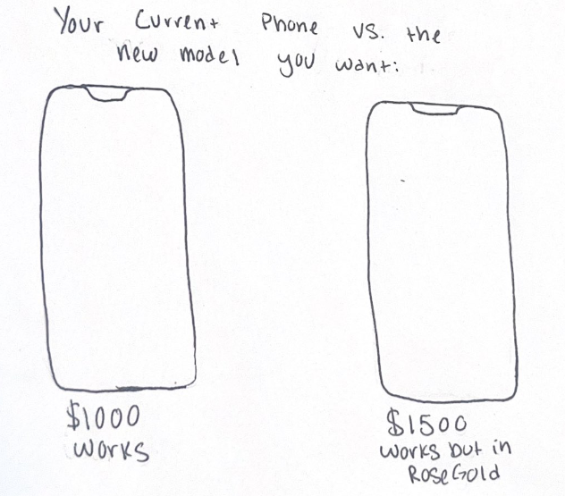
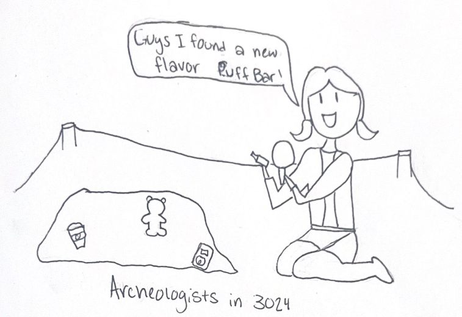

It is almost a default for humans with a camera to photograph what their eyes deem as beautiful. Nothing against
sunsets, and flowers, and fresh morning dew on grass, but I find we have an overwhelming amount of these lush
stock images. When was the last time you saw something truly boring, gross, needless, or maybe even … trashy! Yes!<
Trash! So often we document the natural gifts and beauties of the world, but what about the man-made trashes? This
is why I set out to document some of my weekly trash items, because there truly is beauty in all things used,
unneeded, and discardable. Trash is beutiful because it can act as a medium of story telling, however it is the
stories it tells that can speak in more impactful matters.

Trash can tell an important
story about the responsibility of humanity and the human practices that result in waste accumulation, but also
expression, art, and discussion around waste. In the web article Beautiful
Trash; Art and Transformation, author Paola Ibarra makes a point that, “talking about trash sparks a
discussion about society and mass consumerism”. She shifts the perspective of trash as an individual item, to
trash being a communitive contribution that includes all consumers. It highlights the responsibility that all
consumers have to adding to the wide waste piles littering the world. Yet, consumers feel the need to keep
consuming; as Banash
and DeGregoria explain in their issue for NANO, “consumers are enjoined to the endless repetition of buying
objects that can never produce the wholeness they promise. Once the newly bought objects are found empty, the
cycle continues”. The cycle of buying within a consumerist society results in the relationship we have now with
waste. Like a soul-less, unfulfilling repetition of use but never reuse, most items we come across daily are
products of the ‘single-use’ model of production that has become increasingly more popular.
This issue
even extends into global politics, as the manners of consumption effect the overall economy of countries, as
outlined in the academic paper Scientists'
warning against the society of waste, it plays a complicated role in Latin America as the country continues
to expand its middle class. The group discusses expanding mindful consumption into educational curriculum, but
recognize that, “it is also a challenge for most industrialized countries where a consumption-driven model is
being increasingly implemented and promoted by the richest fortunes that benefit from this system, and have the
power to control consumption patterns across the population”. The creation and management of trash is very much a
political issue in this way. It addresses how the rate and quality of objects consumed by different societal
classes differ, and how the ones defining waste cycles and structures do so with only profit in mind and no
concern for environmental and societal inequalities. Trash extends beyond just the action of throwing something
out; it’s also about what we throw out and how that truly sparks the discussion about hidden role waste plays in
every corner of the world.

Personally, identifying and resonating with what I decide to be waste is the
first step for being more mindful about consumption in general. I appreciate how Sarah
Newman reminds us in her interview with UChicago News that, “The biggest myth about trash is simply that we
talk about throwing things “away.” There is not, nor has there ever been, an “away” for things to go”. It feels
true that as humans we instinctively have an ‘out of sight out of mind’ point of view. Therefore making it
difficult for us to fully understand the significance of objects we treat as trash. We need to intentionally
remind ourselves of the waste we produce otherwise we naturally forget about the things we discard (we do discard
because we don’t need it after all!). Brian Thill makes the same argument in his chapter Trash
Familiars that waste continues to exist even after we think it is “away”. He writes, “waste is also an
orphan object. It can often be found existing somewhere outside of both the free-floating state and entombment, at
least for a time”. The “away” we send our trash too is often not as far away as we think (landfills and garbage
dumps loom in every civilization), and so the objects we “orphan” linger as they once were until they begin to
crumble, crack, erode, and decay. Sometimes we think we send trash away, but it really just stays and litters our
everyday environments while we turn a blind eye. The pollution of our waste in nature is nothing new for humanity,
Archeologist Newman even described her field as “the science of rubbish”. Yet what we consider trash (even if it’s
found littered in every corner of the earth) should remain identified as trash. Lest we normalize pollutants as a
means of validating out continued overconsumption. Ian
Bogost reflects this idea in his chapter Ontography; he states, “we must not confuse the values of the
design of objects for human use, such as doors, toasters, and computers, with the nature of the world itself”. The
objects we use (and eventually discard) will forever be only useful in our sphere of humanity, so we should be
more mindful of how these objects interject themselves into the entirety of the natural world.
I believe by
looking at what we discard we can tell a lot about a person’s needs, interests, and priorities. Trash tells the
more secretive stories of a one’s personal life, each item represents the difficult decision to let go. By
documenting my trash, I become more aware and appreciative of the objects I use. Or I can become more aware and
understanding of what I choose to let go of. Looking at your own trash offers an easy reflection into what we
choose to consume, and choices are everything! Trash is everything! Take a look at some of my choices this
week in the Home Page.